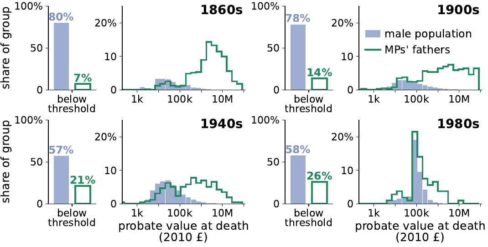
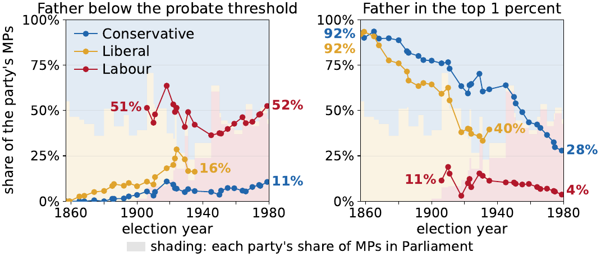
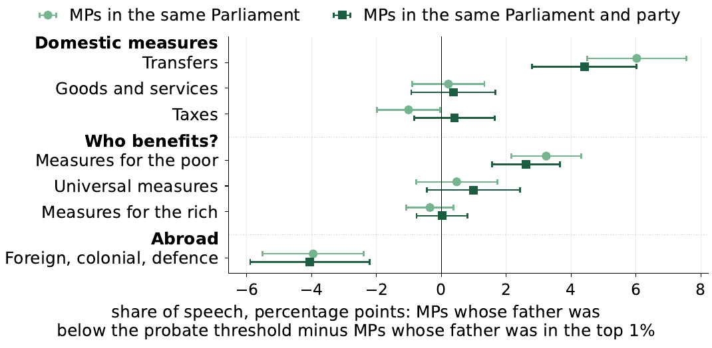
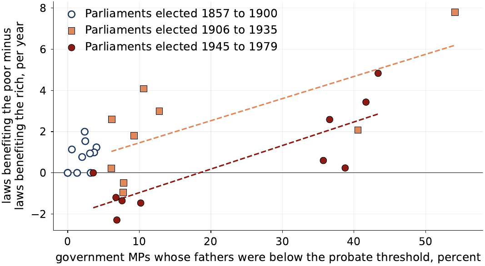
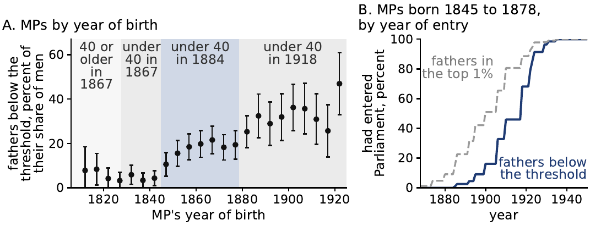
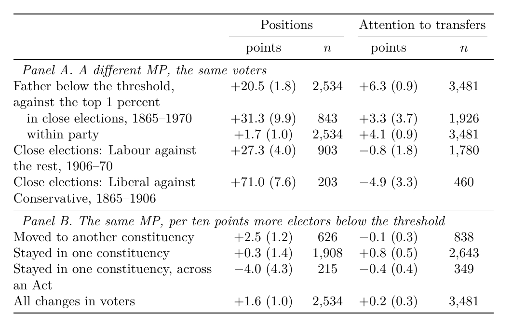

Papers
Job Market Paper
@unpublished{praninskas2026enfranchisement,
author = {Praninskas, Gailius and Munroe, Ellen},
title = {How Enfranchisement Led to Representation},
year = {2026},
note = {Job Market Paper}
}
How did enfranchisement make Parliament more representative of the population? Was it because poorer politicians were elected and advocated different policies, or because all politicians responded to new voters? We study Britain’s democratisation, combining 17 million wealth-at-death records with biographies of Members of Parliament (MPs) to place politicians, their fathers and voters in the same wealth distribution from 1858 to 1990. The wealth gap between MPs’ fathers and the population fell from 2,900 times in the 1860s to 7 in the 1980s. We estimate the effect of the enfranchisement Acts of 1867, 1884, 1918 and 1928 across cohorts of politicians and across constituencies. Poorer constituencies voted for the party that fielded poorer candidates, but the early Acts barely changed MPs’ backgrounds or Parliament’s attention to the poor. Enfranchisement brought MPs from poor backgrounds into Parliament only after 1900, once Labour and trade unions financed their candidacies. Analysing 5.9 million parliamentary speeches, we find that these MPs advocated for policies benefiting the poor, which Parliament then began to pass. MPs from rich backgrounds did not argue more for the poor when their own voters became poorer. Enfranchisement changed policy by changing who was elected.
- 2026: Linnaeus Inequality Summit; KIZ Political Economy Workshop; HYRCE Liège; 2nd Warwick–LSE Political Economy PhD Conference; LSE SPEECH
- 2025: Royal Economic Society Annual Conference; Danish Historical Political Economy Workshop; 14th Annual Lithuanian Conference on Economic Research; Warwick–LSE Political Economy PhD Conference; Oxford University Political Economy Work in Progress; LSE Political Science Political Economy Work in Progress; LSE SPEECH
- 2024: LSE Workshop on Institutions and Political Economy; LSE SPEECH
Key Findings
▶
1. The wealth gap between Parliament and the population fell from 2,900 to 7 times
In the 1860s fewer than one in ten adults could vote, and four in five MPs died richer than 99 of every 100 of their contemporaries. The typical MP’s father was about 2,900 times as wealthy as the typical man in the 1860s and about 7 times in the 1980s. Nearly three-quarters of the fall came from Parliament drawing on lower ranks of the distribution, and about a quarter from the narrowing of the distribution itself.

▶
2. Poorer MPs entered Parliament through Labour and the unions
Labour entered Parliament in 1906 with 51 percent of its MPs’ fathers below the probate threshold, and its entry accounts for 60 percent of the rise in MPs whose fathers were below the threshold. Among MPs whose candidacies were financed by a trade union, 58 percent had fathers below the probate threshold, against 31 percent of those financed by a local party association. In 1885 a Conservative candidate spent £664, while an adult man who died at the ninetieth percentile that year left £433.

▶
3. MPs from poorer backgrounds advocated and passed pro-poor policies
In the same parliament, MPs whose fathers were below the probate threshold gave 6.0 percentage points more of their speech to transfers than MPs whose fathers were in the top 1 percent, and 4.0 points less to defence, foreign and colonial affairs. After 1906, for every ten points more of its MPs with below-threshold fathers, a government passed about one more law for the poor a year. After 1945 most of the laws Parliament passed were universal, under governments of both parties.


▶
4. A wider franchise brought in MPs from poorer backgrounds
MPs who entered at the same election were elected by the same voters, but those who started their political careers after an expansion of the franchise came from poorer backgrounds. By changing who began political careers, the franchise accounts for about a third of the closing of the wealth gap and most of the rise in the share of poor MPs. MPs from poor backgrounds reached Parliament late: among MPs born 1845 to 1878, 16 percent of those whose fathers were below the probate threshold had entered by 1905, against 51 percent of those whose fathers were in the top 1 percent.

▶
5. Enfranchisement affected policy by changing MPs
The electorates the Acts of 1867 and 1884 made poorer elected Labour MPs from poorer backgrounds, but only from 1918. With equally poor voters, MPs whose fathers were below the probate threshold took the side of the poor in 20.5 percentage points more of their positions than MPs whose fathers were in the top 1 percent, and gave 6.3 points more attention to transfers. For the same MP, for every ten points more electors below the threshold, the two were only 1.6 and 0.2 points higher.

Working Papers
Wealth and Political Dynasties
Do political dynasties matter for access to office and for behaviour in it? We show that the answer depends on what they pass on: economic or political capital. We compare the children of MPs with the children of equally wealthy fathers who were not MPs. The children of MPs reach Parliament far more often. Using the timing of the father’s death as a shock to inheritance, we find that the children of rich non-politicians enter politics once the wealth passes to them, whereas the children of MPs enter while the father is still alive. The share of dynastic MPs has fallen over 150 years, but relative to the population they come from, their advantage is as large as in the 1860s. In office, dynastic MPs act like equally wealthy MPs, take up the father’s issues, and are no more likely to argue for restricting access to politics.
Privatising Common Property: Evidence from the Welsh Parliamentary Enclosures
Draft available upon request
Slides
Economists stress that well-defined private property rights matter for efficiency and development, yet little is known about what happens when common land is privatised. We study the Welsh Parliamentary Enclosures: 227 Acts of Parliament, 1760–1936, that put communally owned or managed land under a single owner. We digitise every Welsh enclosure and link them to parish censuses, grain prices and land-ownership records. Contrary to common historical accounts, enclosure did not reduce population or change farming occupations, and it was not associated with grain prices. Enclosed parishes ended up with significantly lower land values and less concentrated land ownership than unenclosed parishes. We argue that enclosure created many fragmented holdings, which led to hold-up and other contracting problems.
Work in Progress
Why Become a Politician? Pecuniary Incentives and Selection
Do people enter politics because office is lucrative or because they want to change policy? We observe the wealth at death of winning and losing candidates since 1832, across the introduction of MPs’ salaries in 1911 and the parties’ assumption of campaign costs after 1949. Comparing winners and losers of close elections, we find that office paid only for Conservatives after 1945; for everyone else, politics was not lucrative. A Roy model of political entry then tells us who should have entered after each reform under each motive, and who did enter is consistent with candidates seeking to change policy.
How Do Political Movements Form?
What turned an industrial movement of trade unions into a political one? I ask whether it was the prospect of representation: voting rights and adverse court judgments raised what the poor could gain by standing for office. I follow every trade union, trades council, Independent Labour Party branch and union affiliation to Labour in Britain from 1869 to 1920, by constituency, to see when, where and why unions entered politics. After the Taff Vale judgment of 1901 made union funds liable for strike damages, the share of union members in unions affiliated to Labour rose from 18 to 44 percent within two years.
Wealth Is Health? Life Expectancy and Public Goods
We ask whether the rise in life expectancy since the mid-nineteenth century came from economic growth or from public health, and who gained from each. We estimate the average age at death by the wealth of the family a person was born into, for everyone who died in England and Wales from 1858. Most of the gain was a shift of the whole curve: people at every level of wealth lived longer, even though wealth inequality remained extreme, which suggests that the gains in health went to everyone because they came from what was provided to everyone. We ask which public goods did this and who demanded them, and find that the towns that built public water and sewerage were the richest, not those where most poor people had the vote.
A Century of Women in Power? Household Composition and Women’s Representation
Why did women’s representation in parliaments rise only decades after women could vote? I argue that representation followed a change in household composition. As long as most women lived in their fathers’ or husbands’ households, they voted as their households did. Women who lived on their own voted independently. In eight Western European countries, young unmarried women moved to the left from the 1980s, and parties of the left then fielded more women candidates. Parties of the left reached 20 percent women ten to twenty years before parties of the right, after young women’s votes had changed. In most countries, party and national quotas were adopted after this change in women’s votes. I study the mechanism in more detail in Britain, using Gallup polls from 1955 to 1991. Young women living on their own moved to the left first, in the 1970s, and all young unmarried women followed by the mid-1980s. Married women did not change who they voted for. Women voters then began to prefer women candidates, and parties responded by fielding more women.
Other Publications
RCTs & Human Uplift Studies: Methodological Challenges and Practical Solutions for Frontier AI Evaluation
Human uplift studies, or studies that measure the effects of AI access on human performance via randomized controlled trials (RCTs) or similar methodologies, increasingly inform frontier AI governance and deployment decisions. While RCT methods are robust in other fields, their interaction with the distinctive properties of frontier AI systems remains underexamined, particularly when results are used to inform high-stakes decisions. We present findings from interviews with 16 expert practitioners with experience conducting human uplift studies in domains including biosecurity, cybersecurity, education, and labor. Across interviews, experts described a recurring tension between the standard causal inference assumptions upon which human uplift studies rely and the object of study itself. Rapidly evolving AI systems, shifting baselines, heterogeneous and changing user proficiency, and porous real-world settings strain assumptions underlying internal, external, and construct validity, complicating the interpretation and appropriate use of uplift evidence. We contribute (1) a synthesis of methodological challenges in human uplift studies, mapped to risks to study validity and classified by their degree of specificity to large language model (LLM) systems, and (2) a mapping from challenges to proposed solutions.